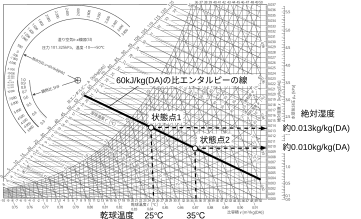
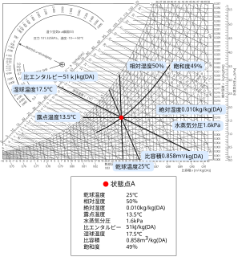

2023年
問題48 湿り空気に関する次の記述のうち，最も不適当なものはどれか．
（1）絶対湿度が一定の状態で，温度が上昇すると相対湿度は低下する．
（2）相対湿度が同じ湿り空気では，温度が高い方が比エンタルピーは高い．
（3）乾球温度が同じ湿り空気では，絶対湿度が高い方が水蒸気圧は高い．
（4）露点温度における湿り空気では，乾球温度と湿球温度は等しい．
（5）比エンタルピーが同じ湿り空気では，温度が高い方が絶対温度は高い．
2023年
問題48 正解（5） 頻出度AAA
比エンタルピーが同じ状態点1と状態点2の湿り空気では，温度が高い状態点2の方が絶対温度は低くなることが2023-48-1図の湿り空気線図から分かる．

絶対湿度などの，湿り空気の性質を表す状態量を2023-48-1表に示す．
2023-48-1表 湿り空気の性質を表す状態量
これらの状態量のうち，「露点温度」，「絶対湿度」，「水蒸気分圧」は，湿り空気の状態量としては同じこと(水分の絶対量)を表しているのに過ぎないので，いずれかを測定すれば他の二つも測定したことになる．
いかなる状態の湿り空気でも，湿り空気線図上の1つの点として表現される．この点を状態点という．状態点は湿り空気の状態を表す2つの量が決まれば求めることができるので，他の状態量は湿り空気線図から求めることができる．しかし，上述のとおり，露点温度，絶対湿度，水蒸気分圧のうちの二つを与えられても，状態点は決定できない（2023-48-2図で1本の横線が決まるだけである）．この三つのうち一つが上昇すれば，他の二つも上昇することは分かる．
 この手の問題に確実にかつ迅速に正解するには，湿り空気線図に何が描かれているかを理解し，頭に思い浮かべることができるようなっておくことが必須である．この問題であれば，1本の右下がりの比エンタルピー線上を右側に移動すれば，すなわち，乾球温度が上がれば，絶対湿度は低くなることが，2023-48-1図のようにイメージできればよい．さて，-(1) ～-(4) はどのように思い浮かべることができるだろうか．
状態量の名称
単位
定義
乾球温度
℃
乾球温度計の示す温度
湿球温度
℃
5m/s程度の気流の当たっている湿球温度計の示す温度．
飽和湿り空気では乾球温度と湿球温度は等しくなる．そうでない場合は常に湿球温度は乾球温度より低い値を示す．
露点温度
℃
湿り空気を冷却していったとき結露を始める温度（水蒸気の絶対量を示す）．ある空気に対して，同じ水蒸気分圧を持つ飽和空気の温度ともいえる．
絶対湿度
kg/kg(DA)
湿り空気中の乾燥空気1kg当たりの水蒸気量を示す．これは，専門的には，重量絶対湿度という．
絶対湿度には，湿り空気1m3中の水蒸気の質量を表す容積絶対湿度［kg/m3］もあるが，空調工学分野では，温度によって変化しない重量絶対湿度の方が取り扱いやすい．
水蒸気分圧
Pa
湿り空気を理想気体（完全気体ともいう）と見なせば，その圧力は水蒸気だけがあったときの圧力と乾燥空気だけがあつたときの圧力の和である．ダルトンの分圧の法則という．そのときの水蒸気の圧力を水蒸気分圧という（水蒸気の絶対量を示す）．
相対湿度
%
ある湿り空気の水蒸気分圧と，同じ温度の飽和湿り空気の水蒸気分圧（飽和水蒸気圧という）の比．飽和湿り空気の相対湿度は100％となる．
比エンタルピー
kJ/kg(DA)
湿り空気の持っている熱量（顕熱+潜熱）．0℃の乾燥空気の比エンタルピーをゼロする．
比容積
m3/kg(DA)
乾き空気1kg当たりの湿り空気が占める容積
飽和度
%
ある湿り空気の絶対湿度と同じ温度の飽和湿り空気の絶対湿度の比を飽和度という．